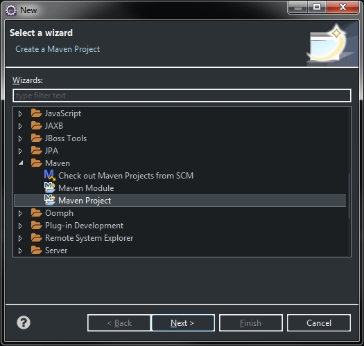
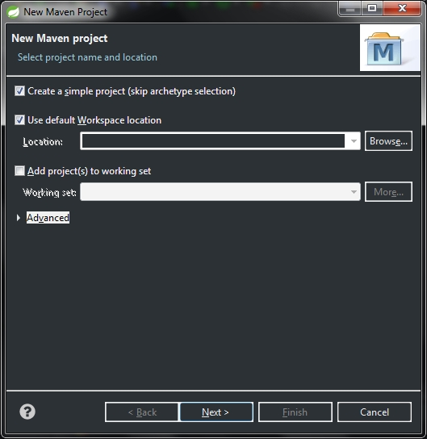
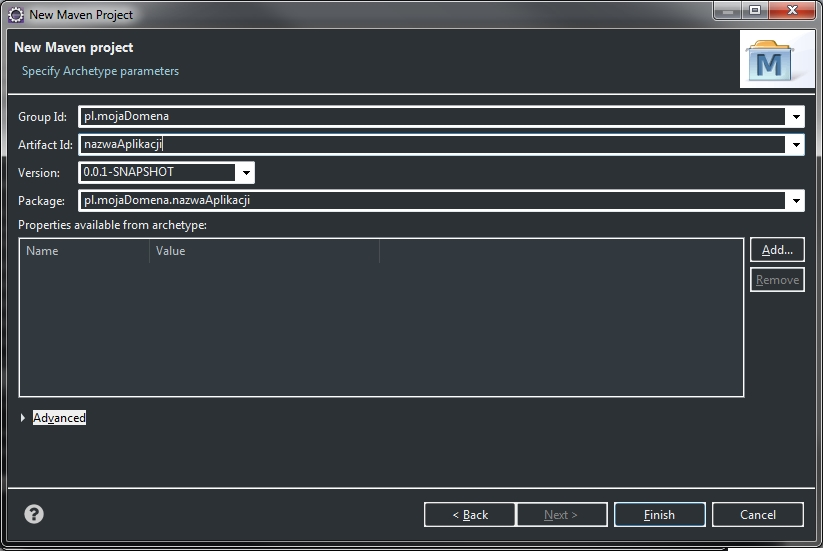
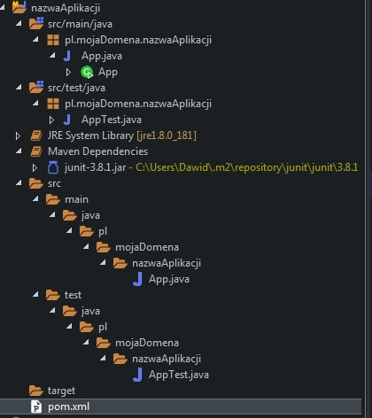

Aby móc w Eclipse utworzyć projekt maven, należy najpierw zainstalować maven na komputerze a później doinstalować odpowieni plugin do Eclipse. Drugą opcją jest instalacja odpowiedniej wersji Eclipse wraz z preinstalowanym oprogramowaniem maven. Aby w Eclipse utworzyć projekt maven należy kliknąć File -> New -> Other...
Wybieramy Maven -> Maven Project i przechodzimy do okna ustawień nowego projektu. W tym oknie zaznaczamy opcję Create a simple project (skip archetype selection). Klikamy Next i przechodzimy do kolejnego okna konfiguracyjnego nowego projektu:
W tym oknie ustawiamy Group Id oraz Artifact Id i następnie klikamy przycisk Finish. Projekt zostaje utworzony.
Poniżej przedstawiono drzewo katalogów po utworzeniu projektu maven w Eclipse:
Aby projekt poprawnie się budował i można go było uruchomić bez problemów z konsoli to należy dodać do pliku pom.xml plugin jak pokazano to na poniższym obrazku, oraz ustawić wartość elementu
<outputDirectory> (folder w którym zostanie utworzony plik jar) oraz <mainClass> (ścieżkę do pliku z klasą zawierającą metodę main)
Po wprowadzeniu jakichkolwiek zmian w pliku pom.xml należy kliknąć ppm na nazwę projektu Maven -> Update Project. Tak przygotowany projekt można już skompilować.
Kompilację robimy z konsoli poleceniem mvn clean package, przechodząc do folderu projektu, jak pokazano to na załączonym obrazku:
Poprawnie skompilowany projekt można uruchomić poleceniem java -jar nazwaProgramu.jar jak pokazano na poniższym obrazku: